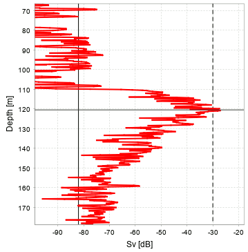

This view plots an echogram variable against depth for the ping corresponding to the mouse position. The plot can either use the same variable as is shown in the echogram, or be configured to show a separate variable. If the mouse is in the bottom echogram, then z is used as the vertical axis instead of depth.

It is possible to plot several pings at once by setting the PingRadius parameter. The colour scheme for the different curves is illustrated in the figure below:
Note that all variables have individual min/max limits and upper/lower thresholds. This means that the limits and thresholds for selected variable in this plot may not correspond to what is shown in the colorbar.